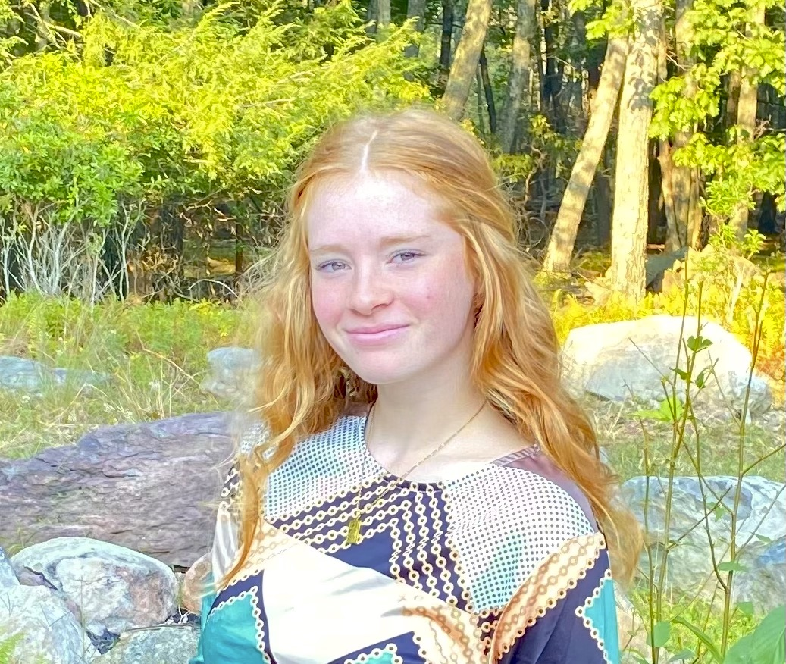

Projects
Unplugged
A 3-page responsive website that was built from a design comp. The included media queries and responsive typography allow the site to make adjustments to mobile, tablet, and desktop screens.
Skills & Tools
- CSS3
- HTML5
- Media Queries
- Responsive Typography
- GitHub
- Visual Studio Code
Guess the Word Game
An interactive JavaScript game that allows one guess at a time. Guess the correct letters within the eight guesses you have to figure out the word and you win. Once guessed correctly or incorrectly, it gives you an option to play again.
Skills & Tools
- Manipulate the DOM
- Vanilla JavaScript
- GitHub
GitHub Repo Gallery
This Project is a responsive gallery of all current public repositories using GitHub's API to pull data from my GitHub profile. More details may be selected within the projects.
Skills & Tools
- APIs
- Manipulate the DOM
- GitHub
Sticky Note App
An interactive React app created for a user to add, delete, and search their own produced sticky notes. As the data flows and the page is reloaded, their notes are still present due to local storage.
Skills & Tools
- JSX
- Managing Data Flow
- Manipulate the DOM
- CodeSandbox
Skills
- HTML
- CSS
- GitHub
- JavaScript
- Media Queries
- Responsive Typography
- JSX
- Managing Data Flow
Tools
- Git
- Visual Studio Code
- Chrome DevTools
- CodeSandbox
About Me
Hey there, I'm Alissa Evers.
I'm a Front End Web Developer who seeks innovation through creating exciting websites like this one. Development drew me in due to its different workflow compared to other everyday jobs. Right before graduating highschool, I had decided I wanted to do something involving my computer. I had absolutely zero knowledge of the languages I was about to learn, but that is what made the learning process more invigorating. Hiking with my dogs, getting a good read in, or simply enjoying the outdoors is what you will catch me doing when I am not coding the day away.